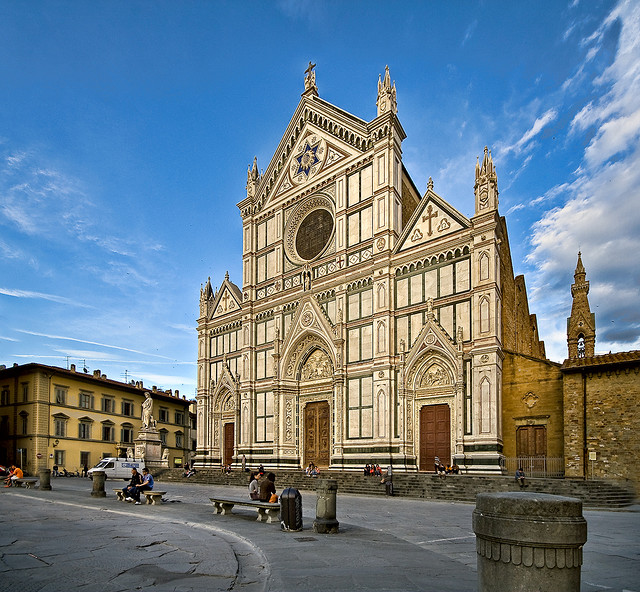

Флоренция - небольшой город с огромным количеством достопримечательностей и мест, которые стоит посетить. Здесь 17 достопримечательностей, на которые стоит взглянуть в первую очередь.
- Санта-Мария-дель-Фьоре
- Баптистерий Сан-Джованни
- Площадь Синьории
- Монастырь Сан-Марко
- Галерея Академии
- Базилика Санта-Кроче
- Площадь Микеланджело
- Понте Веккьо
- Палаццо Питти
- Сады Боболи
- Палаццо Веккьо
- Картинная галерея Уффици
- Музей Галилео
- Дом-музей Данте
- Церковь Святой Маргариты дей Черки
Кафедральный собор или Дуомо — визитная карточка Флоренции. Его строительство велось более 100 лет. Участие в строительстве и отделке интерьера приняли выдающиеся художники и архитекторы своего времени — Джотто, Андреа Пизано, Франческо Таленти, Брунеллески. Шедеврами Санта-Мария-дель-Фьоре признаны колокольня XIV века, центральный фасад в стиле флорентийской готики, законченный только в XIX веке, и единственный купол работы Брунеллески. Внутри храма открыт музей, где можно увидеть собрание ценностей и скульптур. Полюбовавшись на убранство и алтарь, можно подняться на смотровую площадку. Колокольня флорентийского собора или Кампанила Джотто высотой 84,7 метров — 414 ступеней пешком. Смотровая площадка на куполе — 463 ступени. Выбирайте куда подняться за панорамными фото. Для посещения также открыты крипта с гробницей Брунеллески и отдельно стоящий Баптистерий с гробницей антипапы Иоанна XXIII.
На Соборной площади Флоренции, помимо Кафедрального собора, есть еще одно интересное место — это Баптистерий Сан-Джованни. Не все, кто уже бывал во Флоренции, заходили внутрь, но многие наверняка видели роскошные двери, известные как «Врата рая». В баптистерии крестили каждого новорожденного члена семьи Медичи и итальянского поэта Алигьери Данте. «Вратами рая» удивительные ворота баптистерия назвал сам Микеланджело.
Площадь Синьории во все времена была средоточием политической и культурной жизни города. Главное украшение ее — Палаццо Веккьо, выстроенный из серо-желтого тосканского камня, принадлежал в своё время Медичи. Рядом с дворцом уже упомянутый Козимо Медичи еще в XV веке распорядился заложить первый камень нового административного здания, помещения которого сегодня отданы в распоряжение картинной галереи Уффици. Но более всего площадь Сеньории знаменита фонтаном Нептуна и целой серией статуй — копией Давида Микеланджело, композицией Геркулес и Какус и скульптурой самого Козимо.
Это один из старейших монастырей Флоренции, основанный ещё в начале XII века. Уникальность его в том, что монастырь превращён в музей. Среди экспонатов: комната монаха-реформатора Савонаролы, сначала подмявшего всю Флоренцию под себя, а потом сожжённого на костре. Кельи других монахов, каждая из которых украшена маленькой фреской кисти Фра Беато Анджелико.
Академия изящных искусств — второй по популярности музей Флоренции, где хранится оригинальная статуя «Давид» Микеланджело. В этом же зале находится еще 4 его статуи. Среди других экспонатов Академии произведения Перуджино, Таддео Гадди, Филиппо Липпи.
Среди всех церквей Флоренции особенно выделяется церковь Святого Креста. По замыслу авторов, базилика Санта-Кроче должна была стать самой большой в мире. Росписи этой церкви одни из самых значимых образцов средневекового искусства, среди них работы Джотто и Донателло. В Санта-Кроче похоронены выдающиеся флорентийцы: Галилео Галилей, Микеланджело, Никколо Макиавелли, Джоаккино Россини. В соседнем здании находится музей. Базилика стоит на одноименной площади, где сохранились оригинальные постройки.
Лучшего вида на достопримечательности Флоренции (и даже ее окрестностей) в этом городе не существует. Даже купол собора Санта-Мария-дель-Фьоре не сравниться с тем простором, который открывается с площади Микеланджело. По правую руку простирается река Арно и средневековая часть Флоренции (купол собора сразу бросается в глаза), по левую руку — сад Бардини. Вдалеке можно рассмотреть Сады Боболи, если хорошо представлять расположение этих мест на карте. В центре стоит копия статуи «Давида» Микеланджело. Через дорогу возвышается красивая церковь Сан Миниато аль Монте.
Понте Веккьо или Старый Мост — единственный мост во Флоренции, сохранившийся после бомбардировок Второй мировой войны. Мост был построен в 1345 году, изначально на нем находились лавки мясников, дубильщиков и кузнецов, сейчас здесь торгуют ювелирными изделиями и сувенирами. Утром хороший ракурс на мост получается со стороны галереи Уффици, вечером — с соседнего моста Санта-Тринита в лучах заходящего солнца. Не менее интересное ждёт путешественников на самом мосту: там вовсю идет торговля — сувенирами, бижутерией и золотыми украшениями, нередко с драгоценными камнями. Не зря ведь Флоренция до сих пор считается столицей итальянских мастеров.

Дворец Питти — самый большой флорентийский дворец — был построен в 1457 году для Луки Питти, который пытался возвыситься над Медичи, но разорился и с 1550г. в нем жили все правители города. Сейчас Палаццо Питти — один из самых значимых музеев Флоренции, где размещены Палатинская галерея, Галерея современного искусства, Музей серебра, Музей фарфора, Музей карет и Галерея костюма. Музей серебра собрал в себе великолепную коллекцию ваз. Здесь есть древнеримские амфоры, вазы империи Сасанидов, образцы из Византии и Венеции XIV века, в Галерее современного искусства собрана уникальная коллекция произведений итальянских живописцев XIX в., а Палатинская галерея оформлена в стиле борроко и является несравненным фоном для художественных произведений. Здесь находятся картины Рафаэля, Тициана, здесь представлены работы венецианцев Тинторетто и Джорджоне, шедевры Рубенса и Ван Дейка, Караваджо и Мурильо и многих других.
Сады Боболи — это плавное продолжение дворца Питти, чем-то напоминающие Версальский парк. Это место помпезное, ему стоит посвятить полдня-день. Сад Боболи принадлежит дворцу Питти, но посетить его можно отдельно. Это один из лучших парковых ансамблей итальянского Ренессанса, откуда открываются красивые виды. Территория украшена центральной лестницей, роскошными статуями и фонтанами.
Этот дворец — доминирующее сооружение на площади Синьории, имеющее внушительные размеры и грозный вид. Построен он был по проекту архитектора Арнольфо ди Камбио. В процессе строительства здание приобретало мощность и, по мнению Козимо, больше походило на оборонительную на крепость. Потому было решено украсить его башней с часами, придать легкомысленности. Интерес представляют интерьеры дворца, побывать внутри — это возможность ненадолго ощутить себя в шкуре Медичи, простой семьи банкиров из Флоренции.
Галерея Уффици входит в тройку крупнейших музейных сокровищниц мира, соседствуя с Лувром и музеем Метрополитен. Это один из самых старых и значимых музеев Европы, основанный Козимо Медичи. Поэтому она и входит в данный список. Но важно отметить, что посещать её стоит лишь если Вы готовы выделить на это достаточно большой промежуток времени. Среди сокровищ Уффици произведения Боттичелли, Караваджо, Леонардо да Винчи, Рафаэля, Микеланджело, Тициана. В коллекцию на протяжении веков вкладывались Медичи, пока, наконец, последняя из представителей рода не передала её во владение государства.
Этот несколько нестандартный для Флоренции музей расположен в мрачном здании XI века на набережной Арно. Считается, что здесь собрана лучшая в мире коллекция средневековых научных инструментов, принадлежавшая Медичи. В частности, тут выставлены оригиналы телескопов Галилео Галилея его собственной конструкции. А восковые модели рожениц, предназначенные для обучения акушерок из больницы Санта Мария Нуова, производят сильное впечатление.
Когда от Соборной площади следуешь к дому Данте, кажется, что перед тобой оживает средневековая Флоренция. Но на самом деле дом-музей Данте — это здание, построенное в 1910 г. Оно выстроено на фундаменте бывшего дома Агильери, где он жил и писал «Божественную комедию». Всё остальное настоящее. Если будет время побывать в музее, будьте уверены, — все вещи имеют прямое отношение к жизни и творчеству флорентийца.
Эту небольшую церковь называют «часовней Данте». Если получится, постарайтесь заглянуть в храм, где венчался Данте и похоронена его невеста Беатриче Портинари. Мало кого семейная церквушка оставляет равнодушным. У могилы молодой женщины стоит аккуратная урна, где каждый желающий может оставить признание в любви, послание или просьбу. Беатриче охотно исполняет желания, особенно выстраданные. Церковь не впечатляет интерьером, но зато на стенах развешаны картины семейной жизни Данте, а итальянские школьники упорно несут туда рисунки — первые пробы кисти. Место спокойное, уютное и насквозь пропитанное светлой грустью по ушедшей.
В данном списке отсутствуют многие интересные места, на которые стоит полюбоваться хотя бы снаружи. Так что не забудьте выделить немного времени на прогулку по городу, чтобы рассмотреть его в деталях.
Пусть кажется, что компактность Флоренции позволяет увидеть всю её за одно посещение, но, к сожалению, это не так. Приезжая сюда вновь и вновь будешь находить что-то новое. Так что главное - не торопиться и выделять достаточно времени для вдумчивого посещения всех знаковых мест, гнаться за качеством, а не количеством.
^Наверх